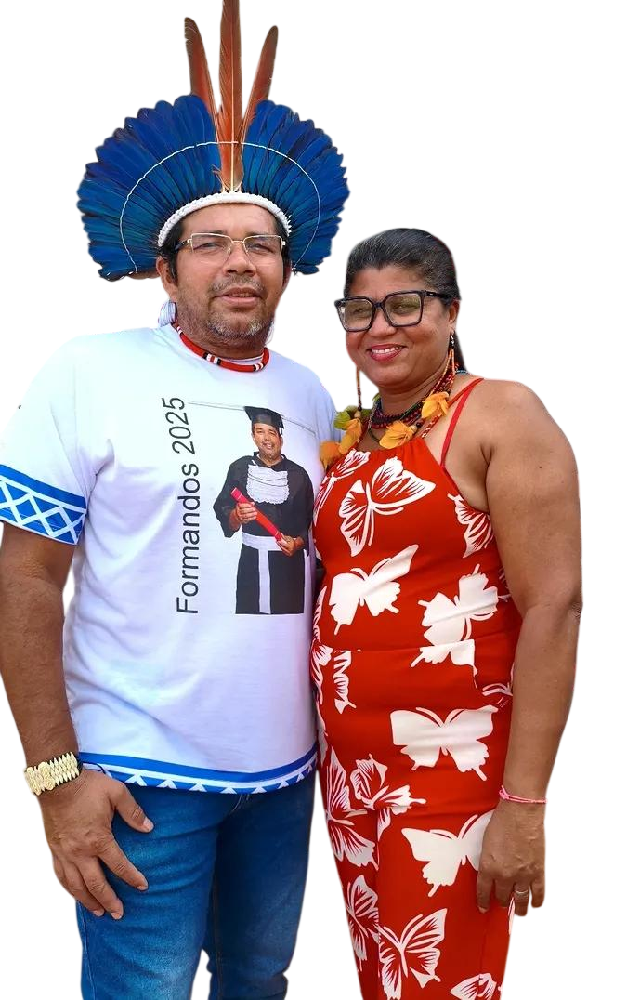

O atual cacique do povo Kiriri é Adenilson, casado com Carliusa, que ocupa o cargo de vice-cacique.
Carliusa desempenha um papel fundamental na comunidade, não apenas como liderança política, mas também na área da educação.
Ela atua como diretora da Escola Estadual Ibiramã Kiriri do Acré, localizada dentro da aldeia, contribuindo diretamente para a formação das novas gerações e para a valorização da cultura indígena no ambiente escolar
Seu trabalho fortalece a transmissão dos saberes tradicionais, ao mesmo tempo em que integra conhecimentos formais, promovendo uma educação que respeita e preserva a identidade do povo Kiriri.
Como vice-cacique, Carliusa também participa das decisões importantes da comunidade, auxiliando na organização social, na defesa dos direitos do povo e no fortalecimento das tradições.
Sua atuação demonstra a importância da liderança feminina dentro da aldeia, sendo referência tanto na educação quanto na gestão comunitária.
Ela também foi fundamental no processo de reconhecimento da Aldeia Ibiramã e na valorização da cultura Kiriri na região e atuou ativamente na luta pela terra e contra injustiças, destacando-se pela busca pela moradia e plantio dignos para sua comunidade.
